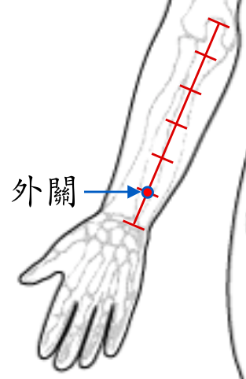

【穴位名稱】: 外關 (SJ5)

【治療症狀】: 膽固醇偏高、血脂肪太高 三叉神經痛 紅斑性肢痛 肩膀痠痛 肩痛不舉 落枕 手痛 手脹_手麻 臂痛 肘痛 腕痛 腳踝痠痛 腰酸腰痛 蕁麻疹 手指化膿 偏頭痛 牙痛 牙酸 牙齦炎 耳嗚 喉嚨痛 扁桃腺炎 腮腺炎 扁桃腺炎 發熱
【取穴位置】: 前臂伸側面腕背橫紋後二寸，尺骨與橈骨之間，當陽池與肘尖的連線上。屈肘俯掌時，在指伸肌橈側凹陷處。《靈樞·經脈》：「去腕二寸」；《針灸大成》：「腕後二寸兩骨間，與內關相對」。
【針刺方法】: 直刺或略後上、下斜刺0.5～1吋。艾炷灸3～5壯，艾條溫灸5～15分鐘。